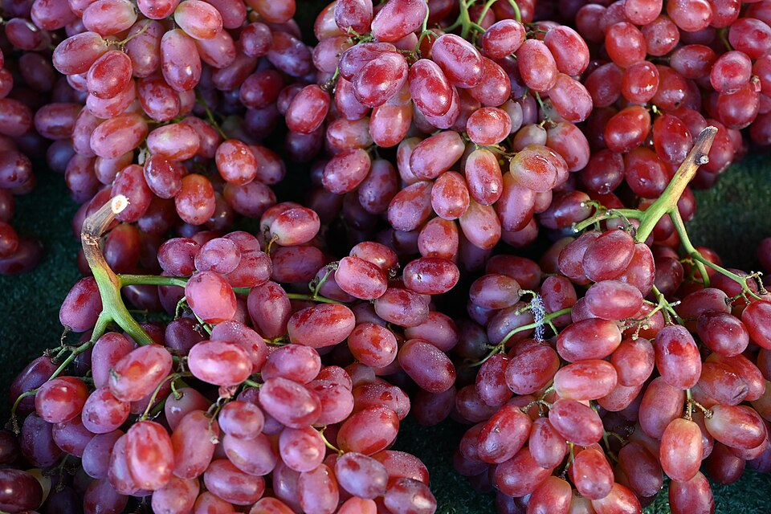
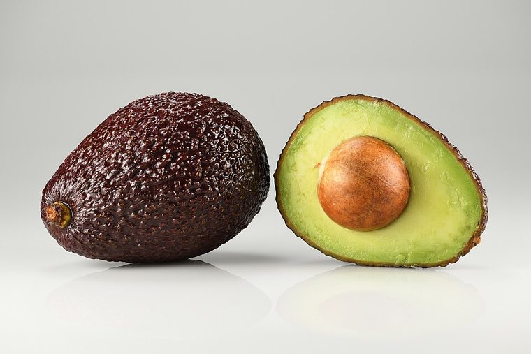
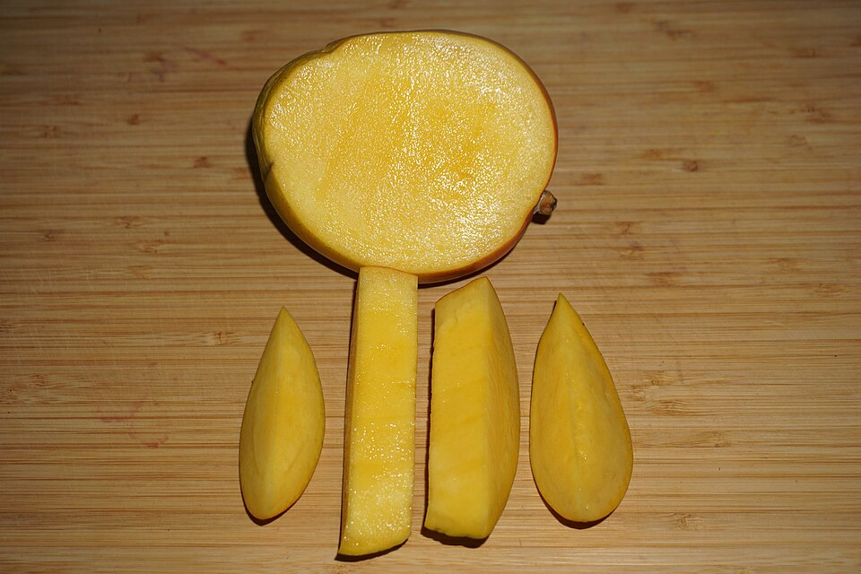
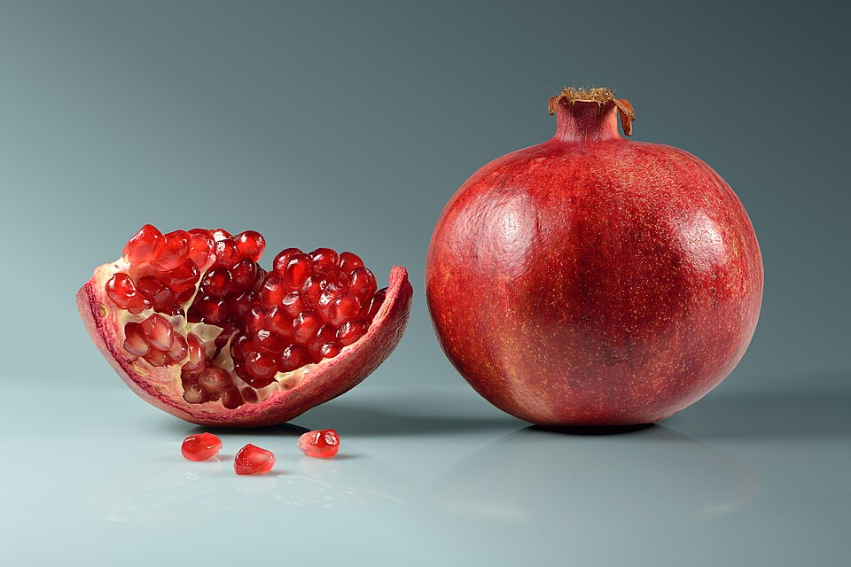

— Línea Activa · Colareta Agroexport —

Arándano
1° exportador
mundial
mundial

Uva
1° exportador
mundial de uva fresca
mundial de uva fresca

Palta
2° exportador
mundial
mundial

Mango
Top mundial
en variedad Kent
en variedad Kent

Granada
Calibre y color
de exportación
de exportación
Ventana de envío a Europa
En qué meses tenemos cada fruta lista para el comprador europeo.
EneFebMarAbrMayJunJulAgoSepOctNovDic
Temporada
Arándano
Ago a Ene
Uva
Nov a Mar
Palta
Abr a Ago
Mango
Dic a Mar
Granada
Feb a Abr
Ventanas orientativas de campaña. La disponibilidad real se confirma semana a semana.